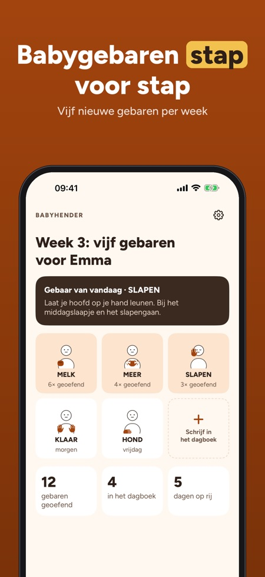
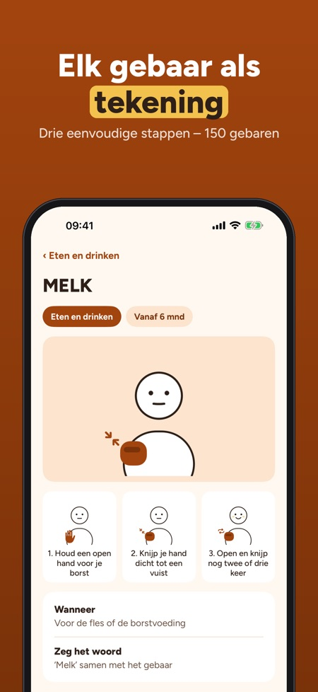
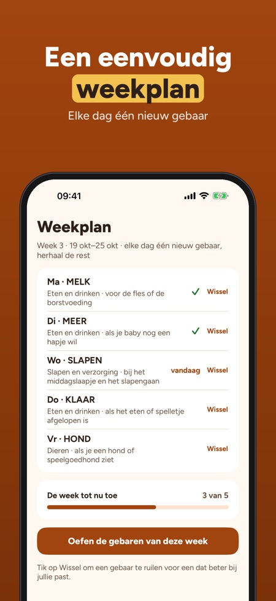

Gebaren voordat je baby praat. Gebaar samen met je baby: 150 gebaren met tekening en stappen, een weekplan met vijf gebaren en een dagboek voor de eerste gebaren – zonder internet.



Babyhender helpt je om eenvoudige gebaren te gebruiken met je baby voordat de woordjes komen – één klein gebaar tegelijk, in het dagelijks leven.
30 gebaren in 3 thema’s, het eerste weekplan, het dagboek en de tips kun je zonder aankoop gebruiken. De volledige versie is een eenmalige aankoop voor alle 150 gebaren, nieuwe weekplannen, liedjes, spelletjes en voortgang. Geen abonnement.
De gebaren zijn eenvoudige, alledaagse gebaren voor baby’s, door ons getekend. Veel lijken op gebaren uit de Nederlandse Gebarentaal; de app linkt naar de Global Signbank voor het officiële gebaar. Babyhender is onafhankelijk, niet verbonden aan het Nederlands Gebarencentrum en geeft geen medisch advies.